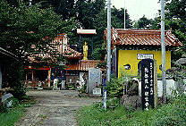

観世音寺/鳥取県鹿野町

山陰である。冬はカニ、秋は二十世紀梨、の鳥取県である。鳥取市の南西にある鹿野町、見どころといっても城跡と温泉くらいの絵に書いたような田舎町である。
そんな鹿野町の一画に寺が数件集まっている寺町らしき地区がある。そのうちのひとつ観世音寺はファンキーな堂宇がズラリと揃う、私の知る限り山陰随一の珍寺だ。
ここのお寺の特徴は何といってもその圧倒的なな色彩に彩られた堂宇群である。参道から一歩境内に入り込むと、その原色に溢れた世界に圧倒される。それも東照宮のような細かい彩色ではなく壁一面がドーンと単色で塗られているのだ。その潔さは中南米あたりの雰囲気さえ漂わせている。
真っ赤に塗られた本堂、真っ黄色に塗られた涅槃堂、真っ青に塗られた壁など、原色が氾濫しており、とても日本の寺院とは思えない空間に仕上がっている。素晴らしすぎる。
あまりの迫力にしばし呆然と立ち尽くすも、気を取り直して境内を歩き回る。
寺の規模としてはさほど広くはないが、癖のあるアイテムがてんこ盛りなので大変だ。
往年のドッキリカメラby野呂圭介（だっけか？）を彷佛とさせるヘルメットを冠ったお地蔵さんが御案内する入り口付近。まずガツンとかましてくれるのが「不肯去観音鐘聲」という額の掛かる建物。鐘の字があるので鐘突き堂の様なものか。正面の壁は黄色に黒い縁取りのアーチと丸窓。そして側面壁は全面黒で、やはり丸窓が赤い縁取りでひとつ付いている。そして四隅の柱と軒裏も赤。妻側には青、軒下の長押にあたる部分は緑にペイントされており、一つの建物で見事に三原色を惜し気もなく使い切っている。
裏手には青と緑でペイントされた壁、水子地蔵、龍華門と称される赤ペイントの門などが続き、本堂に至る。
本堂（大雄峰殿）は柱や軒部分が全て赤く塗られており、華やいだ印象を受ける。そしてその本堂の前にいる狛犬には何故か靴が結び付けられている。何故かは良く分からないがとにかく靴、なのである。
本堂の脇の鐘楼（これも派手派手だが割愛）を過ぎると「古涅槃寺」という額の掛かる涅槃堂。四方の壁面が黄色く入り口の扉は緑というかなりキテいる建物だ。さらに特筆すべきは軒下に描かれた絵である。味のある、独特の絵がそのお堂の四方の軒下を囲んでいるのだ。軒裏の塗り別け方も超個性的。
中には金ぴかの寝釈迦さまが気持ちよさそうに昼寝を決め込んでいる。この建物の裏手は山になっており、左手の階段を登れば神社、右手の山肌には胎内潜りの穴が開いている。ちなみに胎内潜りの穴は二つ。奥行はそんなにないけど蝙蝠なんかがいて結構スリルはあります。
で、山肌に沿って行くと本堂の丁度裏手にある、薬師堂。これもまたファンキーな色彩と手書きのイラストで飾られた軒下、柱と柱の間の妙な装飾、内部の壁に書かれたスペーシーな絵などにより、ここ以外ではまず見ることのできない強烈なパッションを放出する建築物と化している。
で、隣を見れば金ぴかの大観音。デザートに焼肉出されたような気分である。もうお腹一杯です。
という訳でこのの観世音寺ツアーはお終い。全体としては中華風のエレメントに満たされた感じだが強烈な色彩によってそれさえもぶっ飛んだ天上天下唯我独尊状態のすんごく個性的な寺であった。
しかしこれだけでは終わらなかったのだ。
帰りがけにここの住職さんの話を聞く機会に恵まれ、あれやこれやと話していると、なんとここの住職、仏師でもあり、日本全国の大仏、大観音の原型をつくっているとの事であった。
過去の仕事は枚挙に遑がないのだが主なものだけでも当「珍寺大道場」でお馴染みの長崎の西海楽園、秋田の田沢湖大観音、石川のユートピア加賀の里、福井の越前大仏等々の製作を手掛けているとの事。いってみれば日本の珍寺界の影のフィクサーといっても過言ではない仕事っぷりである。
ちなみに氏は中国の仏像修復などにも大変造詣が深く、この寺が全体的に中華風テイストに溢れているのもその為かと思われる。
しかし、上記の垢抜けた仏教テーマパーク等に比べ、より個性的なのは氏、曰く「自分で勝手にやっている」からなのであろう。その点で他者に迎合しない独走ぶりが見ていて大変心地よかった。いや、実に素晴らしい寺であった。100点。
情報提供はへりおすさんです
1999.7
珍寺大道場 HOME